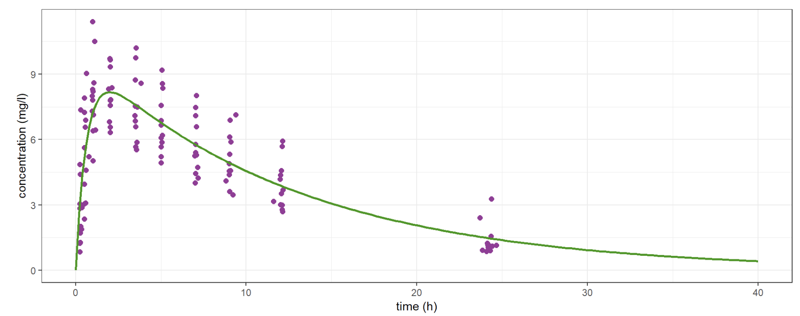
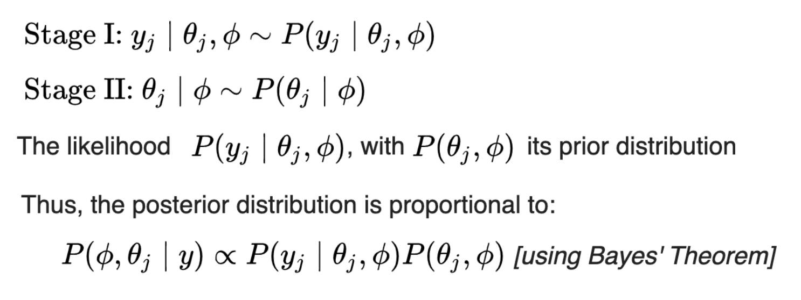
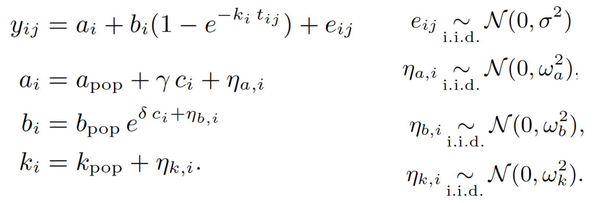
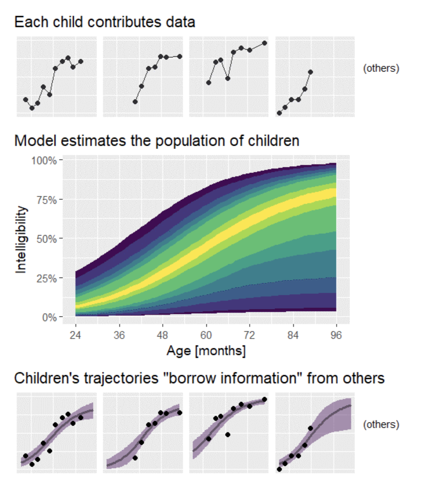
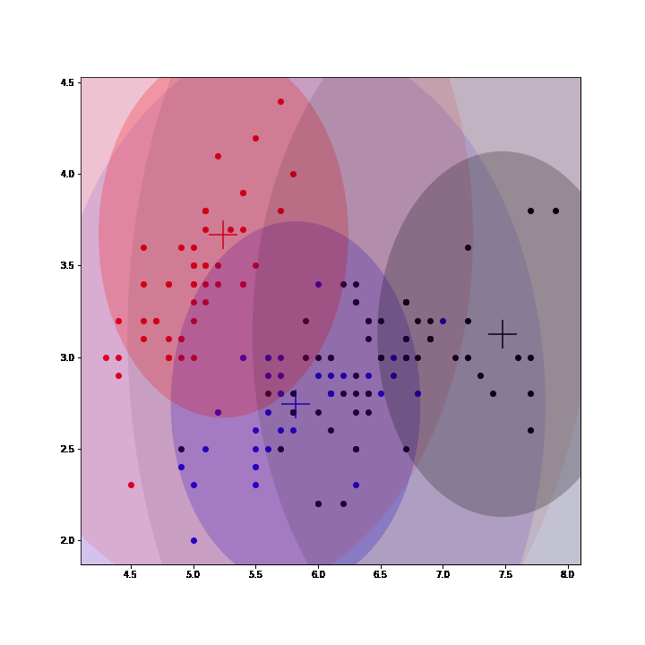
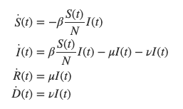
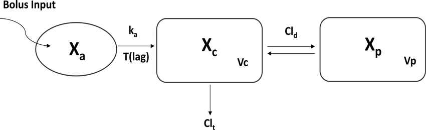
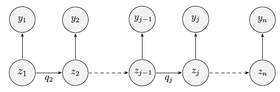

Notes on Modeling in Pharmacokinetics
Population Approach
The Population Approach allows you to fit the same (nonlinear) model to all the patients in a group instead of a single one. Thus, possibly poor individual observations lead to a rich population model. (Observations in purple, model in green)
Hierarchical Model
Learning a Hierarchical Model using the EM algorithm leads to a data-fit term that tends to follow the data and a distance term between posterior and prior that tends to fit prior beliefs. Learning from both data and priors.
Mixed Effects Modeling
While a statistical model must describe an average phenomena from given observations, one component of it must describe the inter-individual variability in a population. "All different all equal" (exple borrowed from @tjmahr)
To this end, *observed* individual covariates are used but some *unexplained* and *unobserved* variability must also be taken into account as random variables. This naturally leads to Mixed Effects Modeling. (exple: weight modeling for rats)
Gaussian Mixture Models
Gaussian Mixture Models (GMM) are a class of unsupervised learning methods that perform "soft" clustering. Instead of assigning each point of a dataset to one and only one cluster (as in K-means), GMM compute a probability of belonging to each cluster.
In GMM, each cluster is defined by a mean, a variance and a mixing probability (weight). GMM can be seen as an instance of latent data models where the complete model is composed of the observed data and latent data: the label assigning each point to a mixture.
Thus, EM algorithm can be used to fit GMM by inferring (posterior sampling) those labels at each iteration, completing the observed model and then maximizing the expected complete log-likelihood to update the parameters. (See animation below, courtesy of @OscarContrerasC)
SIR Models
SIR (Susceptible, Infected, Recovered) models are compartment models aiming at modeling infectious diseases. In particular, the rate at which the disease spread is at stake here. The studied population is operated into compartments: Susceptible, Infected, Recovered (and sometimes Dead)
Each quantity is described in a compartment and depends on time. The whole dynamics from one another is governed by ordinary differential equations. Important variables of this system include the transmission rate \beta or the portion of recovered per day \mu.
We can now describe the change in each compartment and calculate the numbers we are really interested in: the number of people susceptible, infected, and recovered for each day t.
PK Modeling
Pharmacokinetics modeling relates to the study of the evolution of a drug in the body of a patient. It suggests linking observed data from patients, as plasma concentration of the drug, to the dose, the patient characteristics and the mode of absorption.
For instance, the compartmental approach in PK modeling consider the body of a patient as a succession of compartments in which drug diffusion and distribution happens. This type of model describes well kinetic phenomena such as absorption or clearance.
Hidden Markov Models
Markov chains are useful for analyzing categorical longitudinal data. Yet, sometimes Markov process can’t be directly observed and only some output, dependent on a hidden state, is seen.
Such models are named hidden Markov models (HMM) and are particularly useful in some biological contexts For example, they are helpful when characterizing diseases for which the existence of several discrete stages of illness is a realistic assumption: epilepsy and migraines.
HMMs describe how a system moves from one state to another over time when the visited states are unknown and a set of observations is the only information available. In the Pop. approach, HMMs for several individuals can be simultaneously defined by considering mixed HMMs.
Mixture Models
When observations come from a population with underlying heterogeneity (several homogeneous subpopulations) then finite mixture of mixed effects (modeling between-subject variability) models (MMEM) are a great option. E.g, MMEM is particularly relevant when the response of patients to a drug therapy is heterogeneous. During clinical efficacy trials, patients who respond well, partially or not at all can be considered different subpopulations.
Using a categorical covariate (sex, genotype) already implies existence of subpopulations. The covariate (known or not) serves as a label for assigning individuals to a subpopulation. MMEM can be mixtures of distributions, mixtures of residual errors or of structural models
When using MMEM (cf. last week)->introduce diversity into structural models:
(a)Between-subject model mixtures i.e. subpopulations of individuals. Imagine different structural models for responders, nonresponders and partial responders to a given treatment.
(b) Within-subject model mixtures: subpopulations within each patient (e.g. cells or viruses). Then, different structural models are used to describe the response of different subpopulations. NOTE: the proportion of each subpopulation depends on the patient.
Eg.: Study of treated HIV infected patients; data = evolution of viral loads. Fig. shows:(1)Non-responders show no decline in viral load (2)Responders exhibit a sustained load decline and (3-4)Partial responders exhibit an initial drop, then a rebound to higher levels.